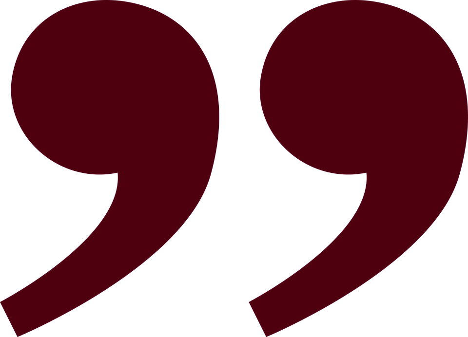

Des cendres, des cendres et de la poussière, et la soif, voilà ce qu'il y a; et des fosses, des fosses, des fosses,
et des Orques, des Orques par milliers. Et toujours le Grand Œil qui regarde et qui regarde encore
— Gollum décrivant le Mordor
Le Mordor (Sindarin Pays noir/sombre) est le royaume de Sauron dès le Deuxième Âge lorsque son maître Morgoth est
vaincu. C'était une terre très peu fertile, semi-désertique à son arrivée, mais elle devint un véritable enfer
quand il commença à y régner. Tout le nord du Mordor est enténébré par Orodruin, un volcan immense qui sert de
forge au Seigneur Ténébreux. Au Premier Âge, le Mordor était situé dans une mer intérieure.